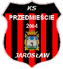

<h1>
	<div id="span-h1">
		<div id='ks-klub-sport'>Klub Sportowy</div> 
		<div id='ks-przedm-jar'>PRZEDMIEŚCIE JAROSŁAW</div>
	</div>	
</h1>
	
<div class="logo">
	<div id="span-desc">Serwis internetowy</div>
	<div class="img">
		 
	</div>
</div>


<nav class="nav">
	<h2 class="hide-element">Nawigacja</h2>
	<div class="nav-media">
		<a href="https://www.facebook.com/PrzedmiescieJaroslaw/?__tn__=%2Cd%2CP-R&eid=ARDEsJt4x2wVmX3wMGMN5_VpKv1JTjDA15vYs1YdSMZT3dw_i8eaKuUTTw_hix96bwuRdcoergXwY-j-" target="blank" title="Przejdź do Facebook"><span class="fa icon-facebook"></span>
		</a>
	</div>
	
	<div id="menu-svg">
	    <svg viewbox="0,-3,25,27">
	    	<path id='p1' d="M0,0 25,0 C25,0 50,10 22,18 C22,18 22,18 12.5,10 C12.5,10 12.5,10 22,2" />
		    <path id='p2' d="M0,10 L25,10" />
		    <path id='p3' d="M25,20 0,20 C0,20 -25,10 3,2 C3,2 3,2 12.5,10 C12.5,10 12.5,10 3,18" />
	    </svg>
	</div>
	
	<div class="main-menu">
		<ol>
			<li><a href="aktualnosci" id="index">Aktualności</a></li>
			<li><a href="javascript:void(0)">Drużyna <span class="fa icon-down-micro"></span></a>
				<ul>
					<li><a href="terminarz" id="timetable">Terminarz</a></li>
					<li><a href="tabela" id="table-season">Tabela</a></li>
					<li><a href="zawodnicy" id="players">Zawodnicy</a></li>
					<li><a href="statystyki" id="stats">Statystyki</a></li>
				</ul>
			</li>
			<li><a href="javascript:void(0)">O klubie <span class="fa icon-down-micro"></span></a>
				<ul>
					<li><a href="historia" id="history">Historia</a></li>
					<li><a href="galeria" id="galleries">Galeria</a></li>
					<li><a href="javascript:void(0)" id="archives">Archiwum</a></li>
				</ul>
			</li>
			<li><a href="kontakt" id="information">Kontakt</a></li>
		</ol>	
	</div>
</nav>